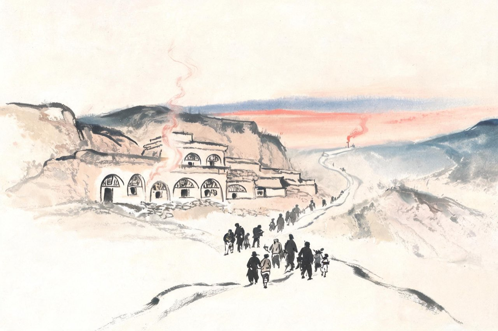
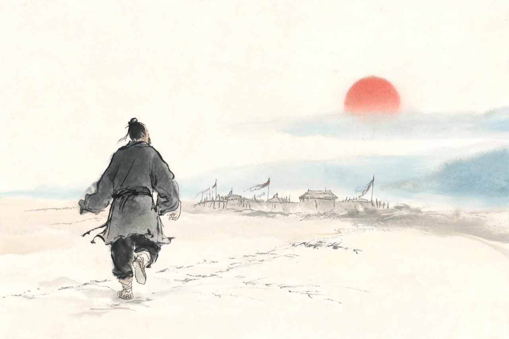

杜甫 · 756-757
陷贼
国破与担当

羌村
天宝十四载十一月，安禄山反于范阳。铁骑南下，洛阳陷落，潼关告急——数月前你在诗里预感的那场崩塌，真的来了。
长安待不成了。你带着妻儿加入逃难的人流，往北，把家安置在鄜州羌村——几孔土窑，落脚在山坳里。乱世的当口，一个八品以下的小官能做的第一件事，是让家人活下来。
安顿好家，你听说肃宗在灵武即位的消息。千里之外的行在，是新朝廷的全部指望，也是你这个诗书人唯一认定的正朔。你决定动身——北上，去投奔灵武。
这一走，把家留在了身后，把自己送进了虎口。
注
- 756 年春夏间携家自奉先白水避乱鄜州羌村——从评传与年谱
- 「数月前」：《咏怀五百字》作于天宝十四载十一月，本场景 756 年六七月，相距约八个月
- 肃宗即位灵武（756 七月）后杜甫北上——本传与《月夜》系年互证
- 奔灵武路线史无明文（本传仅「自鄜州羸服欲奔行在，为贼所得」）；鄜州至灵武约千里。
陷城
北上的路上，你撞上了叛军。
乱兵把抓到的俘虏往长安押，你也在其中。到了长安，叛军查你的身份——官职太小，小到不值一提；名字却有点耳熟，那个写诗的杜某人。于是出现了历史上少有的一幕：同为俘虏，王维被严加看管，你却被闲置不理——叛军连囚禁你的兴趣都没有。
你就这样滞留在沦陷的长安，成了这座空城里一个无人过问的囚徒。此后半年，你在城里望月、望春、望曲江——把一座死城的月色与草木，一个字一个字地看进眼里。
这些诗，后来有了一个统一的名字：诗史。
注
- 756 年八九月间被俘至长安，因官卑未被囚。
- 王维同时被俘、被迫受伪职、事后系狱——两人在长安沦陷期处境对照。
- 「无人过问的囚徒」为叙事概括。
- 「此后半年」总括沦陷全程：《春望》《哀江头》作于至德二载（757）春，不在至德元载秋冬内
秋夜，长安的月升起来了。全城死寂，只有月色是一样的——一样的月色，此刻也照着鄜州，照着窑洞里的妻子和孩子们。你写月，却不写自己望月，只写她在那头独自看月——
月夜
今夜鄜州月，闺中只独看。
遥怜小儿女，未解忆长安。
香雾云鬟湿，清辉玉臂寒。
何时倚虚幌，双照泪痕干。
注
- 对写法（从对面写来）：不写己之思家，写妻之独看。
- 「未解忆长安」：儿女尚小、不解母亲望月之意——两层曲笔
至德二载春，沦陷中的长安又开春了。山河还在，春天照旧——这正是最刺痛的地方。你去了曲江，昔日的游宴之地，如今少陵野老只能吞声哭。你把这个春天写进四十个字——
春望
国破山河在，城春草木深。
感时花溅泪，恨别鸟惊心。
烽火连三月，家书抵万金。
白头搔更短，浑欲不胜簪。
注
- 「感时花溅泪」一联：触景生情，互文见义。
- 「白头搔更短」：时年四十六而白发稀疏——与陷贼困顿境况互证
- 《哀江头》同期作，其句「少陵野老吞声哭，春日潜行曲江曲」化入本场景。

麻鞋见天子
四月，你等到了机会。长安城防的间隙里，你逃出金光门，抄小路，穿两军对峙的无人地带，往西奔凤翔——皇帝的行在。
一路是怎样的光景，你后来写进了《述怀》：去年潼关破，妻子隔绝久……麻鞋见天子，衣袖露两肘。走到行在的那天，你脚上是一双麻鞋，衣袖破得露肘——一个从沦陷区冒死赶来的人，全部行头就是这些。
肃宗授你左拾遗。官不大，从八品上，职在谏诤拾遗——这是你等了十几年的位置：不为俸禄，为的是能对皇帝说话。
后世回看，这是你一生中最亮的一次奔赴：一个四十六岁的人，用一场穿越火线的徒步，兑现了致君尧舜上的少年志向。
注
- 757 四月自长安间道奔凤翔，五月授左拾遗。
- 途中家书难达，见《述怀》「暂欲附书不报」段。
疏救房琯
左拾遗的椅子还没坐热，一场政治风暴来了。
宰相房琯——你素来敬重的大臣——兵败陈陶斜，数万官兵殉难；随后又被政敌弹劾，罢相。新皇帝正要用雷霆手段立威，满朝无人敢言。
你上疏了。谏官的职责所在，你说，罪细不宜免大臣。疏入，肃宗大怒，诏三司推问——下狱论罪。这一疏差点要了你的命，幸得宰相张镐与御史大夫韦陟营救，方才免罪。
从此，你在新朝廷的眼里，成了房琯一党。官还在做，信任已经不在。你后来在诗里回顾这段岁月，说自己当时天真——可在那个满朝缄口的早晨，总要有人说话。
注
- 疏救房琯、诏三司推问、张镐等救之，见本传。
- 「罪细不宜免大臣」语从本传概述；奏疏原文不存，措辞从评传。
- 陈陶斜之败 756 年十月，《悲陈陶》即咏此事。
秋天，一纸墨制放你回鄜州探家——名为探亲，实是疏远。你孤身北行，穿行战场、废墟与荒村，把一路的所见所感，写成继五百字之后的又一长篇——《北征》。夜里经过战场，月光照着白骨；再往前走，就是家了——
北征（节选）
〔节录开篇纪时、经战场、到家三段；中段山川纪行「我行已水滨」与议政「忆昨狼狈初」诸大段从略。〕
皇帝二载秋，闰八月初吉。
杜子将北征，苍茫问家室。
……
夜深经战场，寒月照白骨。
潼关百万师，往者散何卒。
……
生还对童稚，似欲忘饥渴。
问事竟挽须，谁能即嗔喝。
注
- 墨制放还鄜州：名义探家实为疏远——从评传通说
- 到家「问事竟挽须」：儿女牵须问事——乱后重逢的家常，与「妻孥怪我在」（《羌村三首》）同期互证
- 《羌村三首》同期作，「妻孥怪我在」与此诗同一重逢。